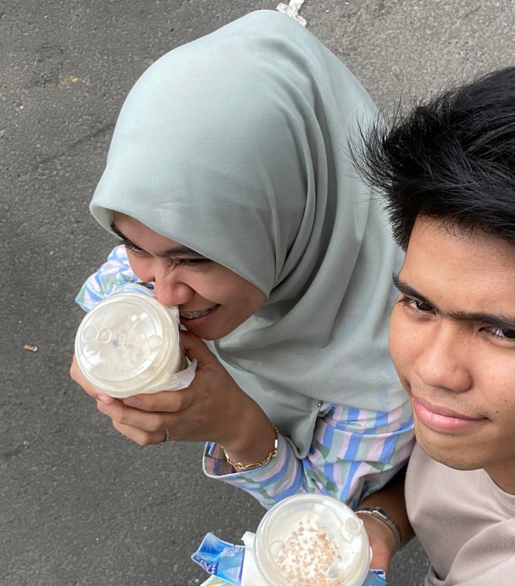

Hiii Riniii
I hope you are not crying yet hahaha!
It's your birthday!! :D
Happy birthday to youu!!
Send
Awalnya cuma mau ngucapin biasa aja.
Tapi karena aku gabut.
I am thinking, Lets do something
special.
Because,
You are Special :)
SO


Happy Birthday!
Hope all the good things always be with you ;)


I LOVE YOUU, I know we are not in a really good conditions right now, but my feeling never distort for you, not even for a while, I have so many reason to love you, And here is a few of them, wait and click next yaa.
:)